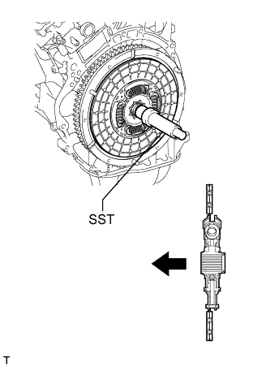
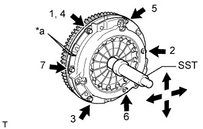
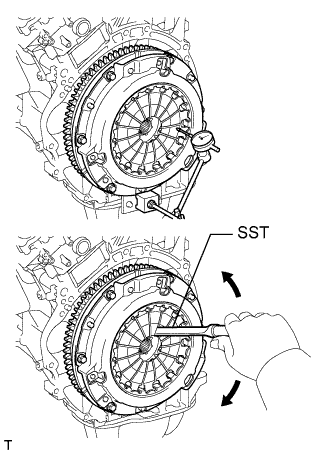
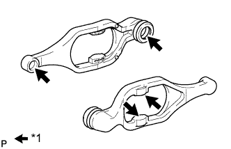
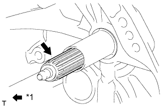

БЛОК СЦЕПЛЕНИЯ (для моделей с двигателем 1GR-FE) > УСТАНОВКА |
| 1. УСТАНОВИТЕ ВЕДОМЫЙ ДИСК СЦЕПЛЕНИЯ В СБОРЕ |
|  |
Вставьте SST в ведомый диск сцепления, а затем установите SST с ведомым диском сцепления на маховик.
 | Со стороны маховика |
| 2. УСТАНОВИТЕ КОЖУХ СЦЕПЛЕНИЯ В СБОРЕ |
|  |
Совместите метки на кожухе сцепления и маховике.
| *a | Метка |
Затяните 6 болтов в последовательности, показанной на рисунке, начиная с болта, который располагается сверху рядом со штифтом.
| 3. ПРОВЕРЬТЕ И ОТРЕГУЛИРУЙТЕ КОЖУХ СЦЕПЛЕНИЯ В СБОРЕ |
|  |
С помощью индикатора часового типа с роликовым датчиком проверьте отклонение конца диафрагменной пружины.
| 4. УСТАНОВИТЕ ВИЛКУ ВЫКЛЮЧЕНИЯ СЦЕПЛЕНИЯ В СБОРЕ |
|  |
Нанесите консистентную смазку для ступицы выключения сцепления на поверхности соприкосновения и оси поворота вилки выключения сцепления, подшипника выключения сцепления и штока, как показано на рисунке.
| *1 | Смазка для ступицы выключения сцепления |
|  |
Нанесите консистентную смазку для шлицевого соединения сцепления на шлицы первичного вала.
| *1 | Смазка для шлицевого соединения сцепления |
Установите подшипник выключения сцепления на вилку выключения сцепления и закрепите его фиксатором.
Установите опору вилки выключения сцепления в блок трансмиссии.
Установите вилку выключения сцепления вместе с подшипником выключения сцепления в блок трансмиссии.
| 5. УСТАНОВИТЕ МЕХАНИЧЕСКУЮ ТРАНСМИССИЮ В СБОРЕ |
Установите механическую трансмиссию (Нажмите здесь).